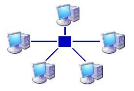
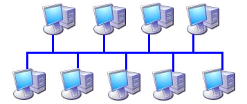
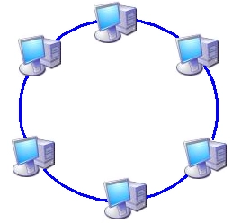
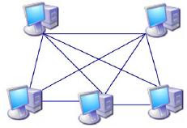
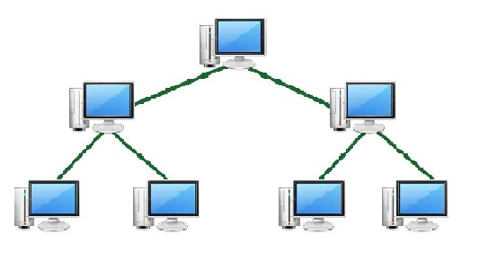
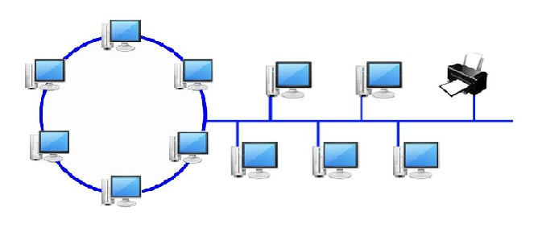

As topologias de rede referem-se à maneira como os dispositivos
estão conectados e organizados em uma rede de computadores.
Existem várias topologias comuns, cada uma com suas próprias
características e vantagens. Aqui estão algumas das principais topologias de rede:
◉ Anel
◉ Estrela
◉ Malha (totalmente ou parcialmente ligada)
◉ Árvore
◉ Híbrida
Topologia em estrela: Nessa topologia, todos os dispositivos são conectados a um
ponto central, geralmente um switch ou hub. Todas as comunicações entre os dispositivos
passam pelo ponto central. Se um dispositivo falhar, os outros dispositivos ainda podem se comunicar normalmente.

Topologia em barramento: Nessa topologia, todos os dispositivos são conectados a um único
cabo compartilhado, chamado de barramento. Cada dispositivo recebe os dados enviados pela
rede e verifica se a mensagem é destinada a ele. Essa topologia é menos comum atualmente
devido à sua limitada escalabilidade e problemas de falha.

Topologia em anel: Nessa topologia, os dispositivos são conectados em uma forma de anel fechado,
em que cada dispositivo é conectado aos seus vizinhos imediatos. Os dados circulam pelo anel em
uma única direção. Se um dispositivo falhar, toda a rede pode ser afetada, pois a comunicação é interrompida.

Topologia em malha: Nessa topologia, cada dispositivo é conectado a todos os outros dispositivos
na rede, formando uma teia completa de conexões. Isso permite alta redundância e confiabilidade,
pois se um caminho de comunicação falhar, ainda há várias rotas alternativas disponíveis.
No entanto, a topologia em malha pode ser complexa e requer muitas conexões.

Topologia em árvore: Nessa topologia, os dispositivos são organizados em uma estrutura
hierárquica semelhante a uma árvore. Um dispositivo central, como um switch ou roteador,
conecta-se a vários dispositivos secundários e, em seguida, esses dispositivos secundários
podem se conectar a outros dispositivos, formando níveis hierárquicos. Essa topologia é
comumente usada em redes de grande escala, como redes corporativas.

A topologia de rede híbrida combina duas ou mais topologias diferentes em uma única rede.
É uma abordagem flexível que permite aproveitar as vantagens de diferentes topologias para
atender às necessidades específicas da rede.

Cada topologia de rede tem suas próprias vantagens e desvantagens, e a escolha da topologia
adequada depende das necessidades específicas da rede, como escalabilidade, confiabilidade,
facilidade de gerenciamento e custo. É comum que as redes usem uma combinação de várias topologias,
criando topologias híbridas para atender aos requisitos específicos.